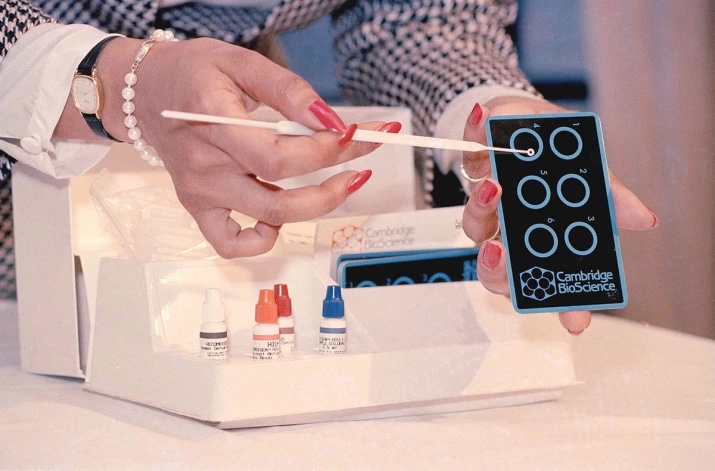
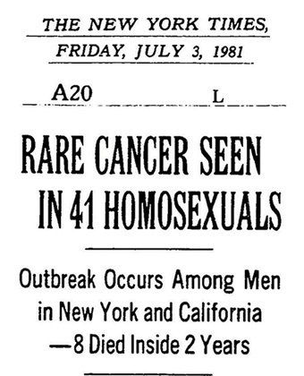
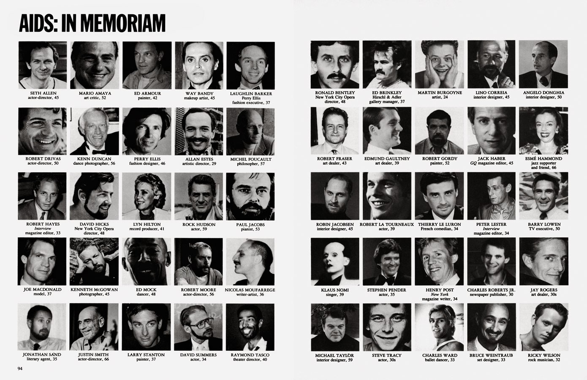
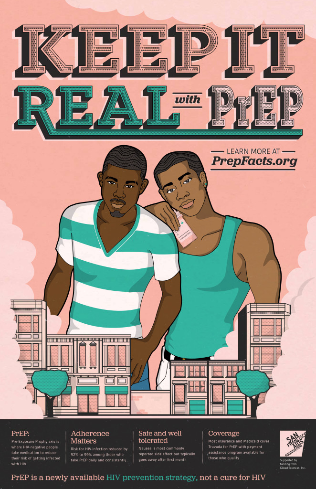
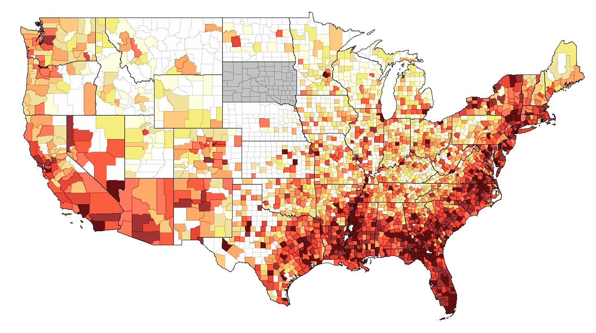

Resources
Below are images linking to various resources, archival documents, historical perspectives and other events, services and information for you to access
ART

CONTEXT HISTORY
ARCHIVES
MEMORY ORIGINS PRESS
PrEP The LGBT Community Center RESOURCES ART
DATADoes your business/facility regularly host walk-in HIV or other health related services? Let us know!